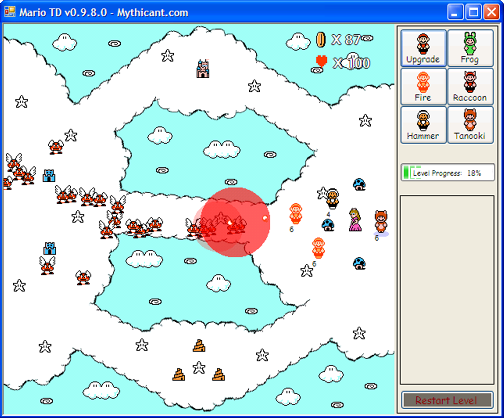

Look at that amazing Windows XP screenshot!
My sister and I wanted to make a video game together. Originally we wanted to make a role playing game, ala Final Fantasy. But coding all of that from scratch as our first video game together would have been a pretty big undertaking. We probably should have just used something like RPG Maker, but I don't remember if RPG Maker existed at the time, and if it did, we didn't really want to pay for it (being either students or recently graduated at the time). So we decided to make a game from scratch, but decided to make something simpler than a full RPG.
We decided on a tower defense game instead. At the time they were pretty popular, so it seemed like a good choice. Rather than coming up with all our own artwork and setting and everything, we decided to use sprites from an existing game. And thus Mario TD was born! Most of the sprites are from Super Mario Bros. 3, but if I recall correctly there were one or two we had to get from Super Mario World or something.
My most memorable moment in making the game was when I was working on the ending. I decided to add fireworks. It seemed very Mario-esque. I stayed up until 2AM or something getting the fireworks to arch and then explode properly. In the morning I showed my wife what I had stayed up working on. She said, "That's it? Well, I guess you did have to make it move and everything, huh?" A couple of valuable lessons were learned that day. Among them were first, not everyone values everything the same. And second, how you present something to someone is important.
Currently I don't seem to have a working version of Mario TD. I think there's a missing dependency or something on the versions I've posted in the past. I need to get the source code and run it in a debugger to see what's actually going wrong. If I can figure it out and getting a working version I'll post it here.